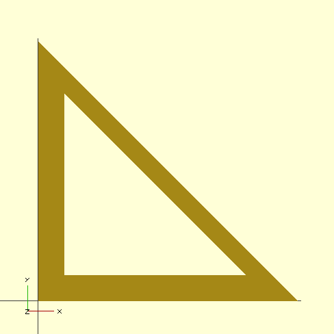

Primitive Shapes
Oozby supports the core 2D and 3D primitive shapes from OpenSCAD with some extra features, and adds some extras primitives as well. There are a few important abbreviations:
- radius: <-> r:
- radius: a..b <-> radius_1: a, radius_2: b
- diameter: a <-> radius: a / 2.0
- corner_radius: <-> cr: and where possible also r: and radius:
- inner_radius: <-> inradius: or ir:, and the diameter/d varients
2D: circle(radius: 5.0)
circle() creates a regular 2d circle with requested radius or diameter. If sides is specified it overrides the fragments option in your resolution settings. Circle is always positioned by it's middle point.
2D: square(5.0)
2D: square([5.0, 10.0])
2D: square(x: 5.0, y: 10.0)
square() create a square or rectangle. The first calling style creates a square with sides that many millimeters across. In the second and third styles X and Y coordinates are specified, creating a rectangle. You can optionally pass corner_radius: and center: arguments square(5) # make a 2d square with 5mm sides square(5, cr: 1.5) # same as above, but corners rounded off at 1.5mm square(x: 5, y: 10) # make a rectange
center: true will position the square/rectangle by it's midpoint. When center is false or unspecified the origin of the square is the bottom left corner where x and y are their lowest values. corner_radius: rounds off the corners of the square for a smoother feel.
2D: ngon(radius: 10.0, sides: 5)
2D: ngon(inner_radius: 5, sides: 8)
2D: hexagon(radius: 10.0)
ngon() creates a regular 2D polygon with the requested number of sides. The inner_radius: option lets you specify the radius to the middle of an edge, where radius: measures to the vertex point.
You can also call this method as any of the following: polygon, pentagon, hexagon, heptagon, octagon, nonagon, enneagon, decagon, hendecagon, undecagon, dodecagon, tridecagon, tetradecagon, pentadecagon, hexadecagon, heptadecagon, octadecagon, enneadecagon, icosagon, triacontagon, tetracontagon, pentacontagon, hexacontagon, heptacontagon, octacontagon, enneacontagon, hectogon which imply sides value from their names.
2D: polygon(points: [[x,y], [x,y], ...])
2D: polygon(points: [[x,y], ...], paths: [[1, 2], [3, 4]])
polygon() creates a 2d shape from an array of coordinates, like a join the dots puzzle. If you specify the optional paths: you can slice up your points in to multiple groups, allowing you to add holes to the inside of your polygon. An optional convexity: argument can help with OpenCSG's live quick rendering in some situations. Check out the OpenSCAD wiki for convexity info if you see display glitches.
1 2 3 4 5 6 7 |
# example from OpenSCAD User Manual polygon( points: [ [0,0], [100,0], [0,100], [10,10], [80,10], [10,80] ], paths: [[0,1,2], [3,4,5]] ) |

3D: sphere(radius: 5.0)
sphere() creates a polyhedron in a UV Sphere shape using the resolution() settings of the current scope, positioned with the center of the sphere at the current scope's position. You can of course substitute diameter: for radius: as described at the top of this page. If you'd like a distorted sphere shape, check out the resize() and scale() scope transforming methods.
3D: cube(5)
3D: cube([1, 2, 3])
3D: cube(x: 1, y: 2, z: 3)
3D: cube(size: [1, 2, 3], center: false, corner_radius: 0)
cube() creates a cube with sides of the specified length. If lengths are provided as an array or named arguments x: Numeric, y: Numeric, z: Numeric this method creates a rectangular prism. Normally positioned at the bottom left front corner with size growing up, away and to the right of OpenSCAD's default view orientation, cube's can be positioned by their center point similar to a sphere by passing the center: true argument or setting it as a default for an entire block of code with a defaults(center: true) do ... end block.
To make more comfortable cubes you can set the corner_radius: argument to a number greater than 0, rounding off the corners with a circular bevel that many millimeters deep. Keep in mind that rounded cubes take substantially longer to render than unrounded cubes.